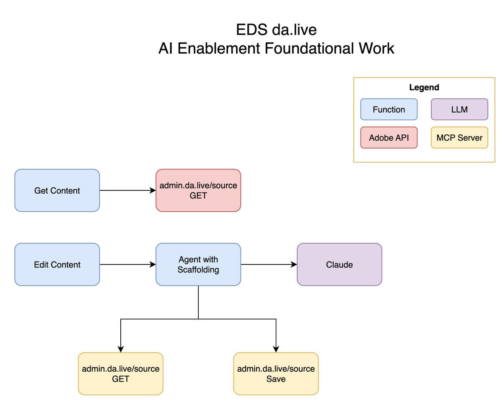
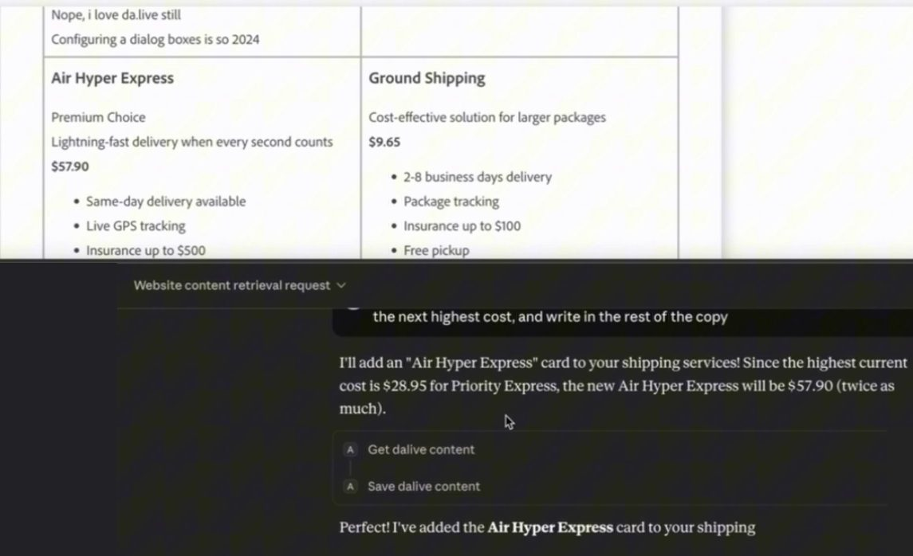

First published as a LinkedIn video on October 5, 2025. Rewritten for this site in October 2026. Code: azure-da-mcp at 81e4cac, the last commit before I recorded, and 1ffb600 for the scripted version.
What changed since I wrote this
A week later I pushed the same server much harder: Claude, Gemini and Azure OpenAI on one MCP server, a deploy to Azure Functions, and n8n on top. That's part two.
The repo kept going after that. In November 2025 it picked up tools to preview and publish, create pages and create folders. Over the next months it grew into the Content Factory, agents that generate, migrate and evaluate da.live content, which became my adaptTo() 2026 talk. This article stays with the October 2025 version: two tools, one weekend.
Content is where AI meets EDS, and da.live speaks HTML
I think content and marketing enablement is ripe for AI. It has migration use cases, personalization use cases, and a lot more, if you can figure out how to get AI to work with content. AEM is a content management system, and Edge Delivery Services is no different.
As I covered in an earlier video, EDS comes in three flavors, and each one needs a completely different way of thinking about AI work:
| How you author | What an AI integration works with |
|---|---|
| Word or Google Docs | The documents themselves |
| Universal Editor | AEM nodes: JCR nodes and their properties |
| da.live | HTML |
This one is about da.live, which was Adobe's newest EDS flavor when I built this. Unlike Universal Editor, where you deal with how AEM thinks about content, here you're literally dealing with HTML. Both the get call and the save call carry HTML, and HTML is much cleaner to hand to a model than a tree of nodes.
Watch this part0:00 Content is where AI meets EDS0:31 Three EDS flavors, and da.live speaks HTML
The first version: a scripted flow
I started with two Azure Functions. GetContent just fetches a page. No AI, just a call: you pass the bearer token you get from admin.da.live, and the source API hands back the page as HTML. Saving is a POST to the same path, with the HTML sent as form data in a field called data.
export async function getContent(path, bearerToken) { try { const response = await axios.get(`${DALIVE_API_URL}${path}`, { headers: { 'Authorization': `Bearer ${bearerToken}` }, timeout: 5000, responseType: 'text' // Get raw HTML text, not JSON }); // … retry and error handling trimmed // Create multipart form data with HTML as a file const formData = new FormData(); formData.append('data', Buffer.from(html), { filename: 'content.html', contentType: 'text/html' }); const response = await axios.post( `${DALIVE_API_URL}${path}`, formData, { headers: { 'Authorization': `Bearer ${bearerToken}`, ...formData.getHeaders() }, timeout: 5000 } );The token took me a while to find. My notes for it are plain: open da.live, open the browser's network tab, and copy the Authorization header from any request to admin.da.live.
EditContent is what I call the good old classical flow. Get the content, run it through whatever AI scaffolding you have, save it back. The scaffolding here is a prompt plus one call to Claude.
- Function
- Adobe API
- LLM
// PHASE 1: Fetch HTML content from da.live const daliveFetchStart = Date.now(); let pageContent; try { pageContent = await getContent(path, bearerToken); // … timing and error handling trimmed // PHASE 2: Build LLM prompt with HTML content const llmPrompt = buildPrompt(command, pageContent.html, path); // PHASE 3: Call LLM API const llmCallStart = Date.now(); let llmResponse; try { llmResponse = await generateEdit(llmPrompt); // … timing and error handling trimmed // PHASE 4: Update content in da.live with edited HTML const daliveUpdateStart = Date.now(); try { await updateContent(path, llmResponse.editedHtml, bearerToken);Keep one number in mind. This flow took about 15 seconds end to end, and that's with an expensive model that spends a bunch of reasoning tokens. A faster model would probably do it in 5 seconds, if you don't care about quality.
Watch this part1:21 The scripted flow2:45 The da.live source API3:33 15 seconds end to end
Why I turned it into an MCP server
A scripted flow like this is a very old pattern. MCP, the Model Context Protocol, is a standard way to hand tools to a model. A server lists what it can do, and any client that speaks MCP (Claude Desktop, n8n, an agent you wrote) lets the model call those tools.
There were three reasons for the pivot:
- It's more universally plug and play. Agent platforms like n8n work with tools, and if my content operations are tools, any of them can use them.
- Content operations as tools have real uses: content migration, personalization, and more.
- I think this is where the world is going, even with the bottlenecks and drawbacks I'm about to get to.
Watch this part4:00 Three reasons to make it an MCP server
Two tools and an agent that decides
The MCP server does two things: it gets content and it saves content. Everything else moves into a box I call the agent, because that's how n8n and a lot of folks name it. There are many ways to draw this diagram, and I'm not a fan of every one, but this is where the board ended up:

The scaffolding moved too. It used to be the order of the calls in my code. Now it lives in how the agent prompts the model. The prompt in edit-content/v1.0.0.json says FIRST: Call get_dalive_content and LAST: Call save_dalive_content, and the code runs a loop: call the model, and if it asks for a tool, run the tool, add the result to the conversation and call the model again.
while (iterationCount < MAX_TOOL_ITERATIONS) { iterationCount++; // … logging and bookkeeping trimmed const response = await client.messages.create(requestParams); // … logging and bookkeeping trimmed // Check if response contains tool use const toolUseBlock = response.content.find(block => block.type === 'tool_use'); if (toolUseBlock && mcpSession) { // … logging and bookkeeping trimmed toolResult = await callMcpTool(mcpSession, toolName, toolInput); // … logging and bookkeeping trimmed // Add tool result to conversation messages.push({ role: 'assistant', content: response.content }); messages.push({ role: 'user', content: [ { type: 'tool_result', tool_use_id: toolUseId, content: JSON.stringify(toolResult) } ] }); // Continue conversation loop continue; // … logging and bookkeeping trimmed // No tool use - this is the final response const textBlock = response.content.find(block => block.type === 'text');So what did it do? First, in terms of content quality, there was zero difference. Second, it took twice as long and used twice as many tokens: my 15 seconds became 30 or more. Before, I had a fairly scripted AI workflow, where the agentic level is maybe 2 out of 10. Now the agent decides when to get and save content. Slower, but much more scalable.
The loop shows where the extra time and tokens come from. Try it below: you play the model, and the page runs the same loop. Then switch to the scripted flow and compare.
With JavaScript on, you play the model and the page runs the loop.
- model calls
- 3
- tool calls
- 2
- messages on next call
- -
- saved
- yes
- Scripted flow: the code decides
- phase 1Code calls GET admin.da.live/source/... and gets the page HTML.
- phase 2Code builds the prompt with the HTML inside it.
- phase 3Code calls the model once. It returns editedHtml.
- phase 4Code calls POST admin.da.live/source/... with the edited HTML.
- Tool loop: the model decides
- call 1Sends 1 message. The model asks for get_dalive_content.
- call 2Sends 3 messages, the page HTML among them. The model asks for save_dalive_content.
- call 3Sends 5 messages. The model answers with text, so the loop ends.
Same edit, two versions. In the second one the model picks every step, and the page HTML rides along on each call after the first get.
Tracing the loop shows two more things. Every turn re-sends the whole conversation, so once the page is fetched, its HTML goes back to the model on every call after that. And nothing in the loop checks that a save happened, or that a get came first. The scripted flow guarantees both in code. The tool loop leaves them to the prompt.
Watch this part4:55 Two tools and an agent that decides6:16 Same quality, twice the time and tokens
The demo: get first, then edit
For the demo I skipped my own agent and used Claude Desktop as the client. Claude Desktop talks to MCP servers over stdio, and my server speaks HTTP, so a small bridge script in the repo reads JSON-RPC from stdin, forwards it to the function with the bearer token, and writes the answers back. The config is a few lines:
{ "mcpServers": { "azure-da-mcp": { "command": "node", "args": ["/absolute/path/to/azure-da-mcp/functions/mcp-stdio-bridge.js"], "env": { "MCP_SERVER_URL": "http://localhost:7071/api/mcp", "DALIVE_BEARER_TOKEN": "your-dalive-bearer-token-here" } } } }The page is a normal da.live page from my postal demo site. I pasted its editor URL into the chat. The tool accepts that, the admin.da.live URL or an aem.page URL, and normalizes it to /source/org/site/path.
Then I used what I call two-shot prompting. First: "Can you please get content from this page and let me know what you think." That fetches the content and gets it into context, the front of the model's memory. I can check that it read the page, because it tells me what it thinks. Then the real ask: "Looking at the first cards, can we have Air Hyper Express? Cost will be twice as much as the next highest cost, and write in the rest of the copy."

It got the content again, which is fine. Then it saved. The new card showed up in the da.live editor without me even refreshing the screen.
This is also the part to keep in mind: AI is unpredictable. Every time I run this, it does slightly different things. The wording of the scaffolding, how the agent prompts the model and how the model chooses its tools, is what drives how effective and how accurate your agent is.
Watch this part7:13 Demo in Claude Desktop7:41 Get the page first8:17 Ask for the new card9:22 The card in da.live
What I took away
Hopefully this is a good demo of MCP versus not. In the grand scheme of system design, it comes down to your requirements and what your product needs to do. Here's where I landed:
- Content quality was the same either way.
- The tool version costs about twice the time and twice the tokens, because the model makes more calls and the page rides along on each one.
- It's much more flexible. The agent decides when to fetch and when to save, and any MCP client can drive the same two tools.
- Accuracy now depends on how the agent prompts the model. The order of calls used to live in my code.
The demo stops short in a few places. The bearer token is copied by hand from the browser. It edits a copy of one page. The server only gets and saves; there's no create, preview or publish yet. And nothing measures quality beyond me reading the result.
Next, I wanted to know whether the same server would work with models other than Claude, and from somewhere other than my laptop. That's part two. If you've wired an agent to da.live or another CMS, I'd like to compare notes on how you keep it predictable.
Watch this part9:32 Wrap-up